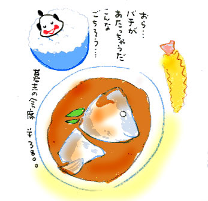

| 江戸時代の味を再現した食事が食べられる店が、八重洲にある、というのをテレビで見た。
「江戸の味を再現」「嘉永三年創業の老舗」「幕末会席」という三つのキイワードが耳に入ってきた瞬間に、
「行くぞ」
と、ココロに決めた。
どうも「江戸の味」ときくと、すぐに飛びつく体質になっている。
デパ地下なんて危ない。
「創業寛永８年の老舗の味」などというキャッチフレーズを見ると、条件反射的に、足が勝手に店の前まで歩きだし、財布を握っていた手が即買いしている。
もしも井の頭通り沿いに、甘納豆屋さんが三軒並んでいて、一軒目が「昭和元年創業・今日限りの大感謝祭・全品２割引」、二軒目が「丹波の有機大豆使用・きょうのおめざで紹介されました・道場○三郎さんも大絶賛！」 、三軒目が「文政元年創業」だとしたら、迷わず三軒目の甘納豆屋さんののれんをくぐるであろう。
先日も、市ヶ谷で虫歯の治療をした帰り、そのまま神楽坂まで歩いて「天保十四年創業の和菓子店の葛餅」を買って帰った。
治療を受けた歯が疼いている、というのに。
その店の紹介記事を雑誌で見たときに、おいしそうだなぁ、とは思っていたけど、買うつもりはなかった。なのに気がついたら神楽坂方面に歩きはじめていた。
不思議だ…。
もしかしたら江戸の味には、我を忘れさせる「魔力」が潜んでいるとしか思えない。
幕末会席が食べられる店は、「嶋村」という高級割烹だった。
江戸の味が再現されているメニューはひとつ。その名も「幕末の会席」。土曜日のみの、限定３０食だ。
パンフレットによれば、この店は、幕末の料理店番付にも登場、二代目と三代目は御膳籠を担いで毎朝江戸城におもむき、接待料理を調らえた。明治になると伊藤博文や田山花袋など、食味にうるさい文士や役者でにぎわった、そうだ。
幕末会席は、全八品のコースになっていた。お品書きは、次の通り。
「胡麻酢和へ」。くらげ、えび、きゅうり、椎茸の胡麻和え。たくさんの胡麻が使ってある。濃厚。
「うづら椀」うづらの頭、内臓、足、羽を除き、包丁で身と骨がペースト状になるまでたたいて蒸したものが、粟麩と一緒に椀盛りされている。肉の香りがむんむんしてる。ときどき細かく砕かれた骨が奥歯に当たる。昔の人は歯が丈夫だったに違いない。
「鯛 刺身」豪華だ…。肉厚で新鮮。
「鯛 かぶと煮」大きな真鯛のお頭がどーんと出てくる。年季の入ってそうな煮汁が濃厚。煮汁をかけるだけでごはん３杯はいけそう。
「蒸し玉子」これまたジャンボ。甘く煮た鶏肉や椎茸がたくさん入っている。かための茶碗蒸しというか。
「きんぷら」贅沢にごま油で揚げたえびが三本と青野菜。
あとは白飯と香の物とあかだしのみそ汁。デザートに自家製ゆずのシャーベット。
どれも手が込んでいておいしかったし、食べきれないほどの量だった。
しかしこの贅沢さ。濃厚さ。驚くばかりだ。これは、江戸幕末セレブの味の再現であろう。
実は、江戸時代の食事ということで、腹にたまらない菜っぱ系のものや、調味料をけちったパンチのないものを勝手に想像していた。
江戸時代の武士や町人は、一汁二菜だったと聞いたことがある。かぶのみそ汁、野菜の煮付け、たくわん、白米と麦の混ぜご飯、そんなメニューである。
ふとジャンボな蒸し玉子を食べながら、いったいこれは何個の卵がはいっているのだろうか、と考えた。
時代劇で見たことがある。床にふせっているおっかあの背中をさすりながら、おっとうが己の貧しさに悔し泣きをする。おっかあに精をつけさせるために、せめて卵を食べさせてやりてぇなぁ、と。その晩、おっとうは、おっかあのために盗賊の一味になる…そんな話だった。
白い飯を食べていたら、仲居さんが追い打ちをかけるように、微笑みながらこう言った。
「ごはんが足りなかったら、たくさんおかわりしてくださいね」
私は心のなかで「た、足りないはずないじゃないですかぁ」と狼狽した。
食べ進むうちに、私は自分のなかの「農民性」がどんどん姿を現してきたことに気がついた。
「幕末の会席」を食べながら、はげしく身分違いだと感じたとき、それは自分のなかで眠っていた「年貢にあえぐ水飲み百姓のＤＮＡ」、もしくは「女郎部屋に売られた百姓娘の憑依霊」が騒ぎ出した、としか思えなかった。
おそらく武家商人のＤＮＡをもつ人々は、ふーん、これが江戸の味なのね、とフツーに納得するだけだろう。
もしかしたら、江戸の味にとびつく私の性質は、私のなかの腹をすかせた農民性が「食べさせろ」と暴れ出す結果なのかもしれない。あわやひえはもういやだ、腹いっぱい江戸の味を食べさせろ、と。
そう思うと、自分のあの業の深さに合点がいく…。
デザートを食べながら、きょうは私のなかにいる「農民」にいい供養ができた、としみじみ思った。

|